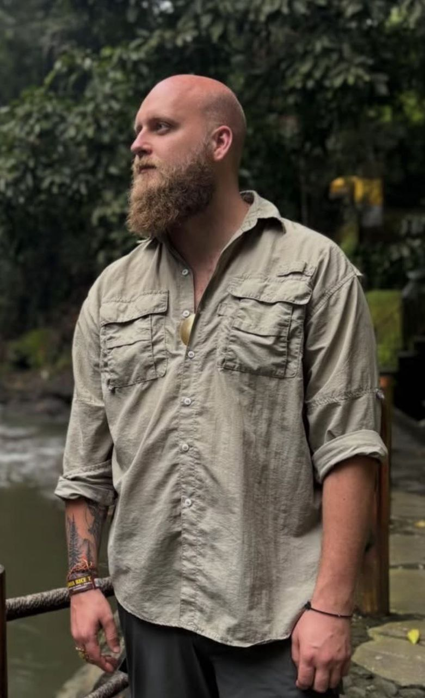
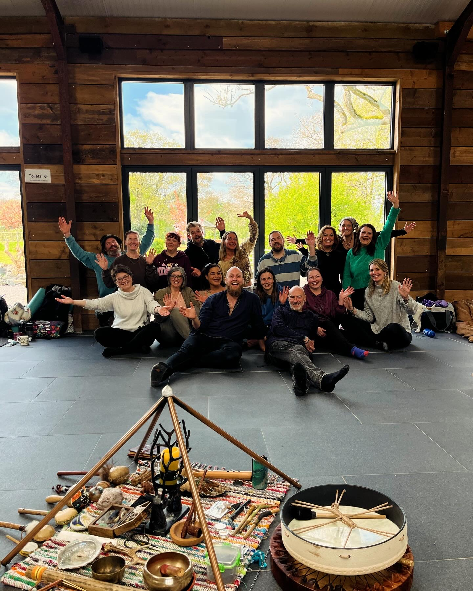
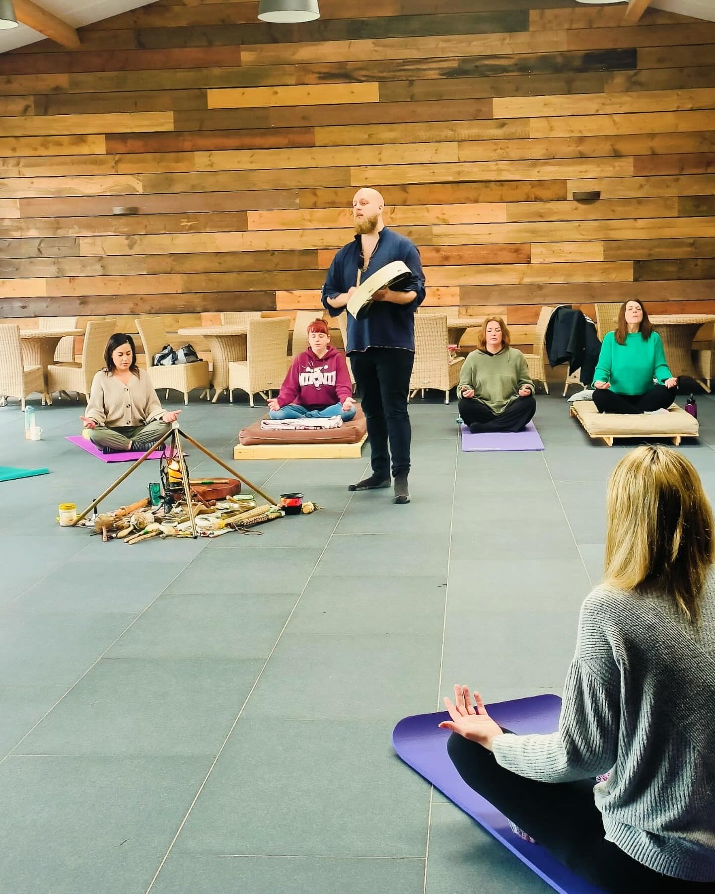
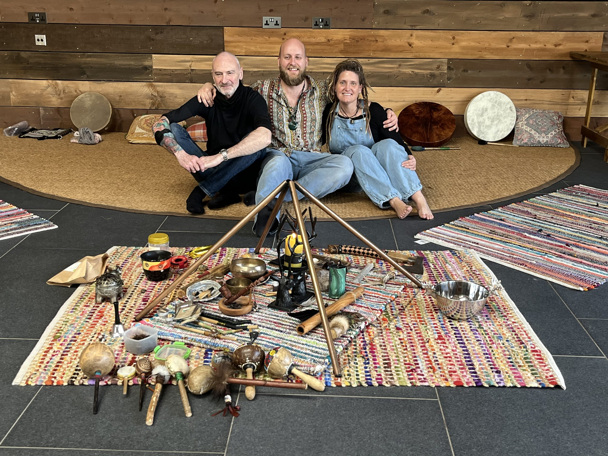
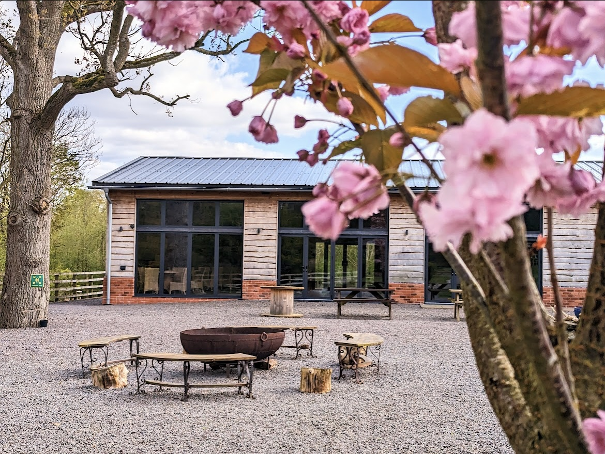
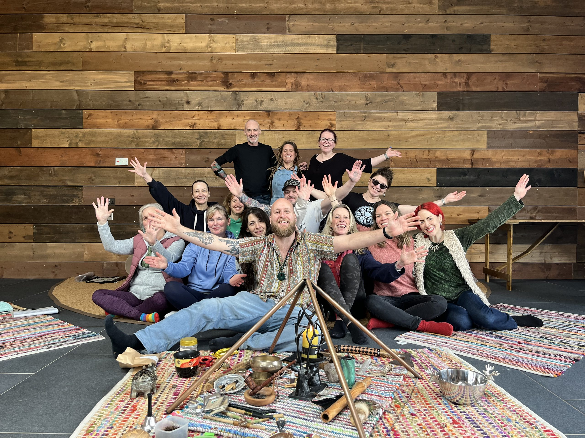

Whether it is grief, burnout, patterns you cannot shake, or a feeling you cannot quite name — you can book directly, or start with a free 20‑minute call if you are not sure where to begin.
Let go of grief, trauma and heavy emotions safely
Stop the cycles that keep you stuck in the same places
Feel present, centred and at peace in your body again
Make decisions from a place of steadiness, not fear
Select a path that speaks to you
You are not falling apart — but something feels off. There is anxiety that flares without warning, exhaustion that sleep does not fix, or a low hum of dread you have quietly learned to live with. You have tried to think your way through it. It has not worked.
Ryan works with what is underneath the story, not the story itself. Clients who come carrying anxiety, burnout or emotional overwhelm often describe something simple after a few sessions: they feel like themselves again.
Book NowYou are not new to this. You know the difference between someone who has read the books and someone who has lived the path. You are not looking for a workshop — you are looking for genuine lineage.
Ryan trained formally in Tibetan and Mongolian shamanic traditions under a lineage holder, holds Andean lineage teachings, and has practised core shamanism since 2019. This is not performance. It is deep, grounded, real work.
Book NowYou already work in a healing capacity and you want to deepen your practice with shamanic tools and techniques. Perhaps you are drawn to offering shamanic healing to your own clients, or you simply want to expand your own personal development.
The year‑long Shamanic Practitioner Training provides a thorough, lineage‑rooted foundation — not a quick certification, but a year of real work that changes how you practise and how you see yourself.
Learn About TrainingSix ways to work with Ryan, from a single session to a year‑long training. Not sure where to start? The discovery call is the place.
One‑to‑one coaching that draws on shamanic principles to help you move through what is holding you back. Whether in person in Birmingham or online via Zoom, sessions are practical, grounded, and go deeper than conventional coaching.
Deep, focused healing work for grief, anxiety, trauma, patterns that will not shift. Sessions work at the level where these things actually live. Available in‑person in Birmingham or online via Zoom — distance does not diminish the depth.
Ryan travels to your home for a focused clearing and healing session in the space where you live. Ideal for those who want to address both personal and environmental energy. Includes home and land clearing plus direct healing work.
A thorough, lineage‑rooted training for those called to practise shamanic healing. Grounded in Tibetan, Mongolian, Andean and core shamanic traditions. Not a weekend course — a year of real work that changes how you practise and how you see yourself.
Enquire NowLive online workshops, courses, and intensive day‑long in‑person events. Exploring themes from soul retrieval to working with ancestors. A powerful way to begin or deepen your shamanic journey, individually or in community.
Get UpdatesImmersive healing experiences in beautiful natural settings. Step away from daily life and go deep. Retreats combine ceremony, one‑to‑one work, and group healing for breakthroughs that take you to a different level.
Express InterestBook a free discovery call and Ryan will help you find the perfect starting point.
Book Your Free CallNo complicated intake process. Just a genuine human conversation to see if this is right for you.
A free 20‑minute conversation where you share what is going on and Ryan listens — properly listens.
Based on your call, Ryan will recommend the approach that best fits your needs, goals and lifestyle.
Your first session is booked. There is nothing to prepare — just turn up. Ryan handles the rest.
Real experiences from real people. No actors, no scripts — just honest accounts of transformation.
"He's dead normal and down to earth for something that's very out of this world. Through the work, I let go of grief I never thought I could get past. It gave me the confidence to go to ceremonies in Mexico and Peru."
"I feel like parts of my soul have been replaced. Before, it was like Emmental cheese — full of holes from all the trauma. After healing with Ryan, I feel whole again. My mental strength has multiplied."
"I was stuck in the black hole of my sorrow for over 10 years. After just one session, the sadness lifted. The old me has returned — with renewed hopes and visions where there had been none."
Real reviews from verified clients on Booksy. 35 five‑star reviews and counting.
"I had my first 1‑2‑1 healing session with Ryan today. I didn't really know what to expect but I was absolutely blown away not only by the deep profound healing but by Ryan's warmth, compassion and genuine care."
— Verified Client, Booksy"Incredible service, feel a million times better. Felt like a super safe space and Ryan was fantastic at his job but also creating safety. Booked to return immediately after leaving."
— Verified Client, Booksy"I have seen Ryan several times now. It is always a positive experience. From the minute you enter the door you feel you are in a safe space."
— Verified Client, Booksy"I am truly grateful for the healing session today. Ryan, you are an amazing, gifted person whom I look forward to working with in the near future."
— Verified Client, Booksy"Was really good first session. Ryan has a lot of wisdom and empathy, definitely recommend. Looking forward to the rest of my healing journey with him."
— Verified Client, Booksy
Ryan Jones is a heart‑centred shamanic healer and practitioner based in Birmingham, UK. Since founding The Heart Shaman in 2019, he has helped over 500 clients across thousands of sessions — guiding them through grief, burnout, life transitions and deep emotional blocks that talking therapy alone could not shift.
Ryan trained formally in Tibetan and Mongolian shamanic traditions under a lineage holder, holds teachings from the Andean lineage, and is grounded in core shamanism. This is not a weekend certification — it is years of dedicated study, practice and personal transformation within authentic lineages.
Whatever brings you — grief, anxiety, trauma, feeling stuck, or something you cannot quite put into words — Ryan works with it directly. Each session is different because each person is different. No scripts, no one‑size‑fits‑all approach. Just real work, tailored to you.
If your question is not answered here, ask on your free discovery call.
Yes. For 1‑1 in‑person and online sessions, you can book directly through the booking page. Ryan will confirm your appointment within 24 hours. The discovery call is there for anyone who is unsure which session is right for them — it is not a requirement. For home visits and retreats, a brief conversation is needed first to confirm availability and logistics.
Absolutely. You do not need to subscribe to any belief system. The work is about connecting with your own emotions, patterns and inner wisdom. Many clients come in sceptical and still experience profound shifts. What matters is your willingness to be open, not what you believe.
Traditional therapy is valuable. Shamanic healing works differently — rather than primarily analysing thoughts and behaviours, we work with the body, emotions and energy to release what is held at a deeper level. Many clients find it reaches places that talking alone could not. It complements therapy beautifully.
That depends on what you are working through. Some people experience meaningful shifts in one or two sessions. Others choose to work together over several months for deeper transformation. There is never pressure to commit to more than feels right. Ryan will discuss this honestly on your discovery call.
A relaxed conversation — usually around 20 minutes. You share what is going on and what you are hoping for. Ryan listens, asks a few questions, and if he can help, explains how. If he is not the right fit, he will tell you honestly and point you in a better direction. Genuinely no pressure.
Both. In‑person sessions are available in Birmingham, and online sessions via Zoom are available UK‑wide and internationally. Many clients find online sessions are just as powerful as in‑person work. Ryan can help you decide which is best for you.
Ryan trained formally under a lineage holder in Tibetan and Mongolian shamanic traditions, holds Andean lineage teachings, and practises core shamanism. He has been practising since 2019 and has completed extensive study within these authentic traditions — not a weekend course or online certification.
Of course — and welcome back. Many people return when they are ready for a new chapter of growth. You do not need to explain the gap. Life happens. When you are ready, the door is open.
A glimpse into the healing space, retreats and workshops.





Book directly below. For home visits or retreats, use WhatsApp or email to check availability first.
Book your session directly and Ryan will confirm within 24 hours. Not sure which session is right? Book a free 20‑minute discovery call first.
Before You Go...
If something on this page resonated with you, your free discovery call is just a conversation — no commitment, no pressure. Ryan would love to hear from you.
Ready to start your healing journey? Book Now